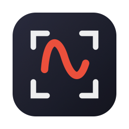

ScreenJot
Fast screenshots with scribbles and quick GIF recordings, from your Mac menu bar.
Download for macOSShortcuts
| ⌘⇧4 | Take a screenshot, then draw on it in place |
| ⌘⇧5 | Record a GIF (15 fps, up to 30 seconds) |
| Tab | Cycle the target: Region → Window → Full Screen |
| ⏎ | Copy the result to the clipboard |
| ⇧⏎ | Save As… |
| esc | Cancel |
| ⌘Z | Undo a stroke |
Installing
- Open the DMG and drag ScreenJot into Applications.
- ScreenJot is not notarized by Apple, so macOS blocks the first launch. Open it once, then go to
System Settings › Privacy & Security, scroll down and click Open Anyway.
This is only needed once.
Or skip the dialog from Terminal:xattr -dr com.apple.quarantine /Applications/ScreenJot.app - Grant Screen Recording permission when asked, then relaunch ScreenJot from the menu bar.